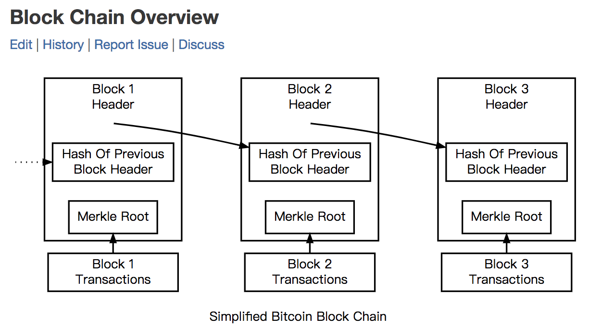
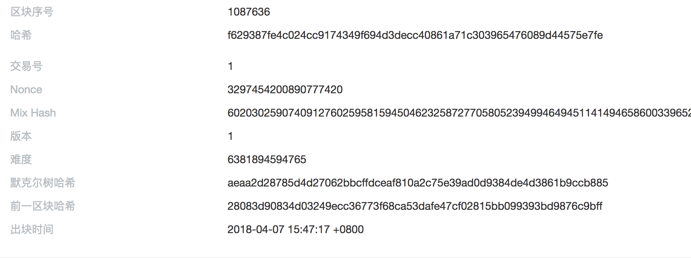
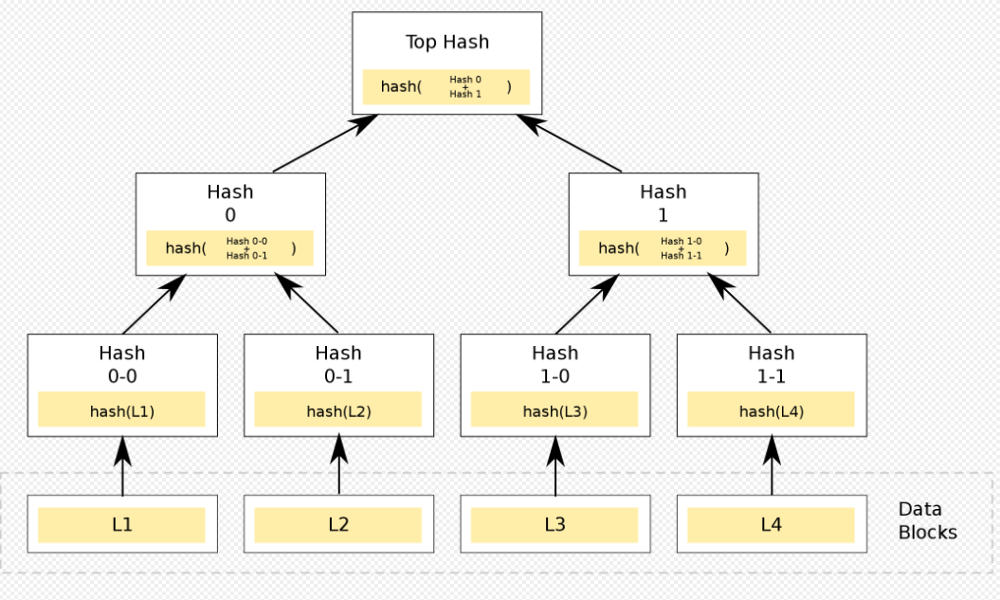
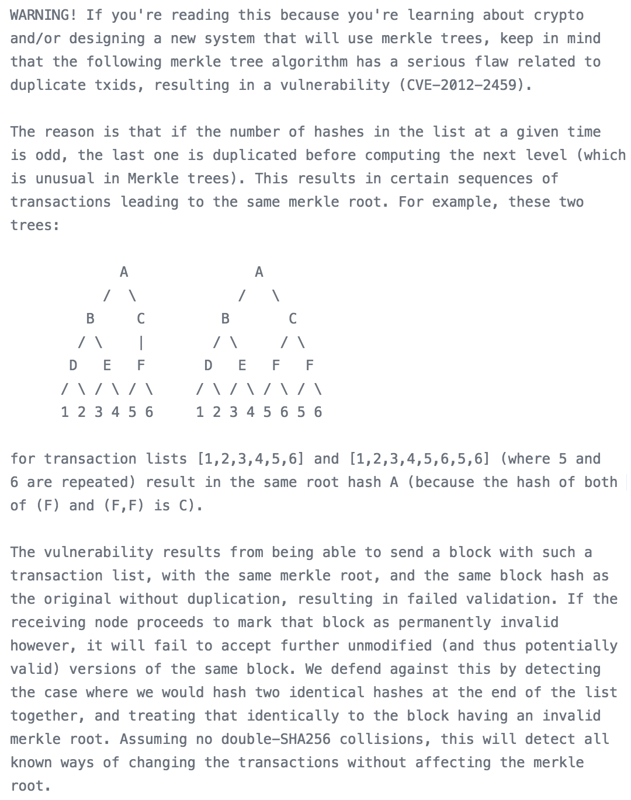
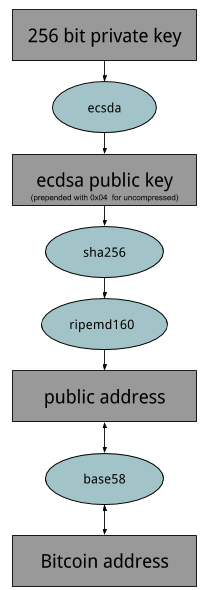

15 | 深入区块链技术（七）：哈希与加密算法
区块链最核心的两个技术点是共识机制和密码学，由于共识机制是公链的基础，所以这部分内容我已经在前面的内容中优先讲解了。
接下来，我来讲一讲区块链的密码学基础，有关区块链密码学你只需要了解它的基本原理和优劣即可。
另外，区块链的密码学中文资料也十分丰富，如果你感兴趣的话，可以在学有余力的基础上酌情深入。
区块链中主要应用了两类密码学算法，第一类是哈希算法，第二类是非对称加密算法。
我们先来看看哈希算法。
哈希算法是一类数学函数算法，又称散列算法，它是一种数据映射关系。
为了方便举例，我们假设 h = HASH( X | z )，你输入一个任意长的数据 z，经过哈希运算后，返回给你固定长度的数据 h，z 叫做原像，h 是哈希结果，又称作“数据指纹”，z 可选的数据集合构成了 X。
哈希算法具有下面的 4 种特性。
目前流行的 Hash 算法包括了 MD5、SHA-1 和 SHA-2，其中 MD5 被证明不具有强抗碰撞性。SHA （Secure Hash Algorithm）是一个 Hash 函数族，分为 SHA-1、SHA-2、SHA-3，代表了三代哈希标准，目前使用比较多的是 SHA-2 系列。
第一代的 SHA-1 基于 MD4 设计，并且模仿了该算法，SHA-1 已被证明了不具备“强抗碰撞性”，所以安全性不够高。
为了提高安全性，第二代 SHA-2 一共包含了 SHA-224、SHA-256、SHA-384，和 SHA-512 算法（统称为 SHA-2），它们跟 SHA-1 算法原理类似。SHA-3 相关算法也已被提出，它的出现并不是要取代 SHA-2，因为 SHA-2 目前并没有出现明显的弱点。
由于对 MD5、和 SHA-1 出现成功的破解，我们需要一个不同与之前算法，可替换的加密散列算法，也就是现在的 SHA-3。
哈希算法被广泛地使用在构造和验证区块、交易的完整性上，由于哈希算法的四个特性，使得我们可以把任意的交易数据做成数据摘要，然后再一个一个链接起来，形成数据块的链式结构。
这样我们可以通过验证每个区块间接地验证交易，然后每个交易原数据也可以做成哈希数据摘要，用于验证交易数据的完整性。
我们借用比特币开发者文档中的图，这个图表达了区块链的基本数据结构，

在图中可以看出，当前区块里面包含上一个区块的哈希，形成一个哈希指针链表，由于哈希的发散性，所以这个链表也有极大的发散性。
我们可以用代码模拟一遍，我们先列表构造 5 个简化的区块，其中第一个块是创世区块，我们规定它指向的前向区块的哈希全为零；
后面第 2 个块，第 3 个块中 content 分别记录了两笔交易，这里为了方便理解，我使用了文字表述交易的内容，实际上，区块链上的交易是二进制格式化的数据，而不是文本数据。代码中并没有填充哈希，是在运行时填充的。
#!/usr/bin/env python
import hashlib
def main():
# example:
block_headers = [
{"prev_block_hash":"0000000000000000000000000000000000000000000000000000000000000000", "content":"genesis block:A pay C 12.3 BTC"},
{"prev_block_hash":"to_be_hashed", "content":"2nd block:C pay B 2.0 BTC"},
{"prev_block_hash":"to_be_hashed", "content":"3th block:transactions..."},
{"prev_block_hash":"to_be_hashed", "content":"4th block:transactions...j"},
{"prev_block_hash":"to_be_hashed", "content":"5th block:transactions..."}
]
# hash prev block header
index = 0
for header in block_headers:
# genesis block, ignore
if index == 0:
print header
index = index + 1
continue
# generate hash chain
prev_block_header = block_headers[index - 1]
target_buffer = prev_block_header["content"] + prev_block_header["prev_block_hash"]
header["prev_block_hash"] = hashlib.sha256(target_buffer).hexdigest()
print header
index = index + 1
if __name__ == '__main__':
main()
我们可以直接得到结果，这是一个典型的哈希指针链表，每一个区块的 prev_block_hash 域指向上一个区块哈希。
{'content': 'genesis block:A pay C 12.3 BTC', 'prev_block_hash': '0000000000000000000000000000000000000000000000000000000000000000'}
{'content': '2nd block:C pay B 2.1 BTC', 'prev_block_hash': '01279c1208a8eca3d4a47a123119b04f1dcc592c818aace2715b2c418b38822a'}
{'content': '3th block:transactions...', 'prev_block_hash': '6d96c220b22371dc1d2b3549da42bd3ea2191f07f18112bf195bc6675bbc6b97'}
{'content': '4th block:transactions...j', 'prev_block_hash': '9e41c61fa151320145a56a38e85c01b8c025729614f4c10596d99068ea0b3395'}
{'content': '5th block:transactions...', 'prev_block_hash': '34f002b445a38fa7402e590629e76943060ffc4de96b1b9bc6b0f564e5a7bc72'}
如果我们将第二块中的 content 从 "C pay B 2.1 BTC" 修改为 "C pay B 2.0 BTC"，那么我们将得到如下结果，我们可以发现从第三个块往后所有的块指向的前一个区块的哈希都不再与上面的一致。
{'content': 'genesis block:A pay C 12.3 BTC', 'prev_block_hash': '0000000000000000000000000000000000000000000000000000000000000000'}
{'content': '2nd block:C pay B 2.0 BTC', 'prev_block_hash': '01279c1208a8eca3d4a47a123119b04f1dcc592c818aace2715b2c418b38822a'}
{'content': '3th block:transactions...', 'prev_block_hash': 'f91faad6b874fb97a20ad9cbc57ef1302a431a2cce4ac5efe28a64b353526849'}
{'content': '4th block:transactions...j', 'prev_block_hash': '99d17dfe9a9fab68cffd6a82bc3786fe3c2d3165f1fba30b3f2ffc418c97fc8b'}
{'content': '5th block:transactions...', 'prev_block_hash': 'd2f42291ef0811e5babc1d38ca8019ee457f84b323a3d549a04b6a4535357d7f'}
以上我们构造了一个极简的区块链的基本结构，区块头描述了一个区块的基本信息，在实际应用中，里面通常包含了下面的几个内容。

图中有当前区块高度、本区块的哈希、前一区块哈希、nonce 值等等。
所以前一区块哈希是一个区块头必备的数据域，这种链式结构具备发散传导性，越往历史以前的篡改，越容易导致大面积的影响，这也叫做历史逆向修改困难。
在 PoW 共识机制的情况下，这种逆向修改的难度会随着当前全网算力线性增长。
哈希算法的一个重要应用是默克尔树（Merkle tree），默克尔树是一种数据结构，通常是一个二叉树，也有可能是多叉树，它以特定的方式逐层向上计算，直到顶部，最顶层叫做默克尔根，默克尔树最为常见和最简单的是二叉默克尔树。
默克尔树的基本结构如下图。
 （图片来自维基百科）
比特币和以太坊都使用了默克尔树这种数据结构，只不过里面存放的数据都是哈希。我们在比特币的核心版本源码中可以发现注释中有介绍。

（图片来自比特币 Core 源码）
以太坊中针对比特币的设计做了改进，叫做默克尔帕特里夏树 (Merkle Patricia tree），相对于比特币在块头中只有一棵树，以太坊有三棵树。
区块链的挖矿算法也应用了哈希算法，挖矿算法利用的是其难题友好性，我们在 PoW 共识机制中讲解过，这里不再赘述。
非对称加密算法是相对于对称算法而言的，这两者组成了密码学的核心内容。
这两者的使用区别体现在密钥是否可以公开，对称密钥要求加解密过程均使用相同的密钥，而非对称加密可以提供一对钥匙，私钥自己保管，公钥可以公开。
常见的对称加密算法有 DES、3DES、AES、IDEA， 常见的非对称加密算法有 RSA、ECC 等。
在比特币等众多数字货币的项目中，在账户层面主要使用的是非对称加密算法。
在对称加密算法里，由于双方需要提前共享密钥，在使用过程中有诸多不便，非对称算法的出现解决了这一难题。
在非对称算法中，私钥一般是通过一个随机数产生的，这个随机数我们也叫做种子，从这个角度来说，知道了这个随机数也就等于知道了私钥，不过私钥的产生范围非常大，在比特币中是 2 的 256 次方，差不多在 10 的 70 方数量级上。
如果你产生随机数的算法足够均匀分布，私钥碰撞的可能性比中了 1 亿大奖同时被雷劈中的概率还要小数亿倍。所以区块链对产生随机数的算法要求比较高，它要求真实的均匀随机分布，而不是计算机伪随机数。
如果我们有了私钥，接下来就如图所示：

我们从私钥到公钥，是由非对称加密算法保证的，这种算法在比特币中选择的是 ECDSA 算法，ECDSA 算法中选择的椭圆曲线名为 secp256k1。
而从公钥到地址，是由哈希算法保证的，在这一步使用了 SHA256 和 RIPEMD160。椭圆曲线加密算法 ECC 利用了“寻找离散对数”的难解性提供了单向不可逆性，具体原理你可以找资料了解一下。
在区块链上，一个比特币交易的产生由两部分组成，第一部分是签名加锁，对应到的是交易的输出、第二部分是解锁花费，对应到的是交易的输入，当我们构造一笔交易的时候必然会用到私钥，这是所有数字货币资产控制权由私钥保证的根本原因。具体逻辑我们留到下篇讲解 UTXO 的时候讨论。
最后来谈谈量子威胁的内容。我在讨论比特币等众多数字货币项目的时候，很多人会问我如何看待量子计算的威胁问题，大家认为量子计算的强大计算力威胁到了哈希的抗碰撞性。其实这不是一个设计缺陷，而是一个发展问题，是可以在区块链的发展过程中解决的。
我对于量子计算的威胁论有以下的看法。
今天我向你介绍了哈希算法，讲解了区块链哪些地方使用了哈希算法，并介绍了非对称加密算法，最后还谈了一下我对量子计算威胁论的看法。
密码学是所有区块链的基础，可以说如果没有密码学的支撑，区块链将会退化成普通的分布式日志系统。
那么亲爱的读者，比特币地址有哪些类型呢？以太坊的地址又是如何生成的呢？
参考阅读：
下一讲：深入区块链技术（八）： UTXO与普通账户模型
点击"下一讲"将记录您当前阅读进度